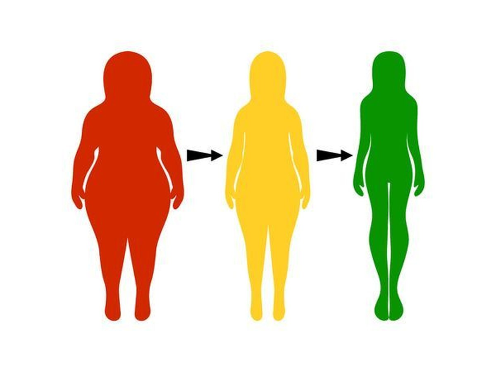
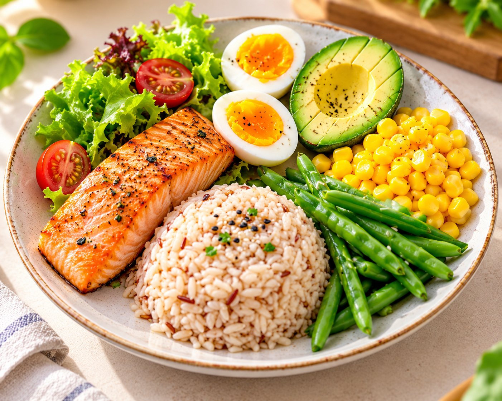
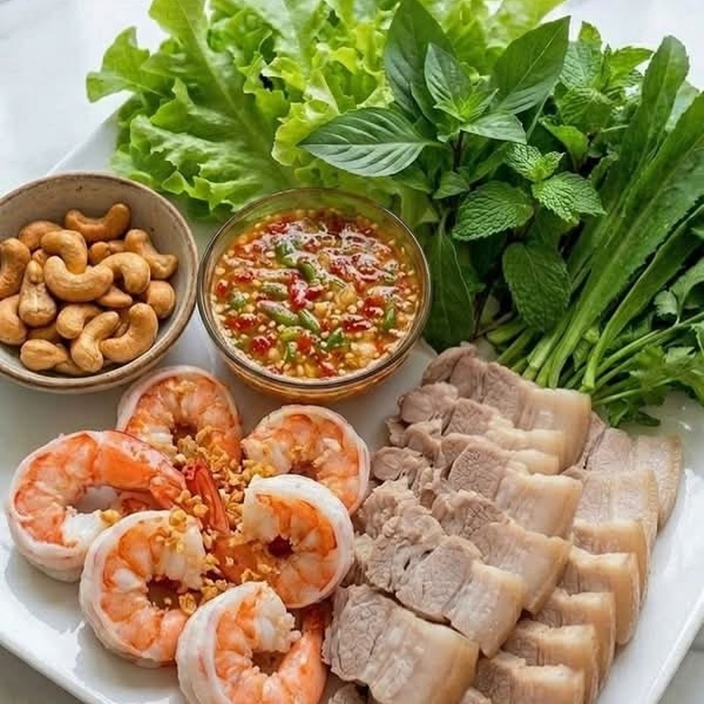

Số 6 Đoàn Thị Liên, Phú Lợi, TP.HCM · Mở cửa 6h30 – 19h00 mỗi ngàyHotline: 0934 386 231 · duocsiphiphuong@gmail.com
Trang chủ / Dinh dưỡng cho giảm cânGiảm cân khoa học
Giảm cân sau tuổi 35 – đúng cách, không nhịn đói
Không loại bỏ cả nhóm thực phẩm, không thuốc giảm cân. Chỉ cần hiểu cơ thể mình đang thay đổi thế nào và ăn cho phù hợp.

Nguyên tắc cốt lõi
5 điều cần nhớ
1Thâm hụt vừa phảiĂn ít hơn nhu cầu một chút, không nhịn đói – để cơ thể không “phòng thủ”.
2Đủ đạm mỗi bữaGiữ cơ khi giảm cân, no lâu hơn. Đặc biệt quan trọng sau tuổi 40.
3Rau chiếm nửa đĩaNhiều chất xơ, ít năng lượng, tốt cho đường huyết và mỡ máu.
4Tinh bột đúng lượngKhông cần bỏ cơm – chọn loại hấp thu chậm, ăn vừa đủ.
5Chậm mà chắcKhoảng 0,5–1 kg mỗi tuần là tốc độ an toàn, dễ duy trì.

Đĩa ăn cân bằng kiểu Việt
Không cần cân đo – chỉ cần nhìn đĩa
Nửa đĩa rau củ: rau luộc, rau xào ít dầu, canh rau, gỏi.
Một phần tư đạm: cá, tôm, thịt nạc, trứng, đậu phụ.
Một phần tư tinh bột: cơm (ưu tiên gạo lứt), khoai, bắp, bún.
Thêm một ít chất béo tốt (dầu ô liu, hạt) và uống nước lọc thay nước ngọt.Tham khảo
Một ngày ăn mẫu của người làm chủ bận rộn
01Sáng · trước giờ họpBánh mì nguyên cám kẹp trứng và rau, hoặc phở nhiều rau, ít bánh. Cà phê ít đường.
02Trưa · cơm văn phòngChọn cá hoặc thịt luộc, thêm một phần rau, lấy nửa chén cơm.
03Chiều · bữa phụSữa chua không đường, một nắm hạt, hoặc một trái cây vừa.
04Tối · tiếp kháchGọi rau và món hấp trước, ít cơm chiên, xen nước lọc giữa các ly.
Cẩm nang
Ăn ngoài & tiếp khách

Nhà hàng ViệtChọn gỏi, canh, cá hấp, gà luộc. Hạn chế món chiên giòn, rang muối.
Tiệc cướiĂn nhiều ở món khai vị salad và súp, ăn ít ở món xôi, lẩu cuối.
Bàn nhậuMỗi ly bia một ly nước lọc. Món nhắm: rau, đậu nành luộc, hải sản hấp.
Cà phê gặp đối tácCà phê đen, trà không đường. Tránh bánh ngọt và nước ép đóng chai.
Kế hoạch khởi đầu
4 tuần đầu – mỗi tuần một thói quen
Thay đổi nhỏ, dễ làm, cộng dồn. Đây là cách Phượng bắt đầu với hầu hết khách hàng.
Tuần 1Thêm rau vào mọi bữaMỗi bữa chính có ít nhất một đĩa rau. Chưa cần bớt gì cả.
Tuần 2Đủ đạm mỗi bữaThêm trứng, cá, đậu phụ hoặc thịt nạc để no lâu hơn.
Tuần 3Đổi đồ uốngThay nước ngọt, trà sữa bằng nước lọc, trà không đường.
Tuần 4Đi bộ sau ăn10–15 phút sau bữa trưa hoặc tối, giúp đường huyết ổn định.
Hiểu lầm thường gặp
Đúng hay sai?
SỰ THẬT: {{m.a}}
Theo dõi tiến trình
• Cân mỗi tuần một lần, cùng giờ, cùng điều kiện• Đo vòng eo 2 tuần một lần• Ghi lại năng lượng, giấc ngủ, cảm giác thèm ăn• Xét nghiệm lại theo hẹn của bác sĩĐo đúng để thấy tiến bộ thật
Muốn có lộ trình giảm cân riêng cho mình?
Mỗi người một cơ địa, một lịch làm việc. Phượng thiết kế thực đơn và đồng hành cùng anh chị trong 90 ngày.
Anh chị có câu hỏi?Phượng có câu trả lời.